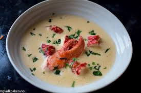

Bài Viết Nổi Bật

Nghệ Thuật Plating Trong Fine Dining
Khám phá cách các đầu bếp hàng đầu biến món ăn thành tác phẩm nghệ thuật, từ kỹ thuật cơ bản đến sáng tạo đỉnh cao.
Đọc thêm →Các Bài Viết Khác
Bí Quyết Chọn Nguyên Liệu Cao Cấp
Từ Wagyu Nhật Bản đến hải sản tươi sống, học cách chọn nguyên liệu.
Xu Hướng Ẩm Thực 2025
Những phong cách plating và nguyên liệu đang nổi trong Fine Dining.
Hành Trình Của Một Đầu Bếp Michelin
Chia sẻ câu chuyện phía sau sao Michelin và áp lực trong bếp.